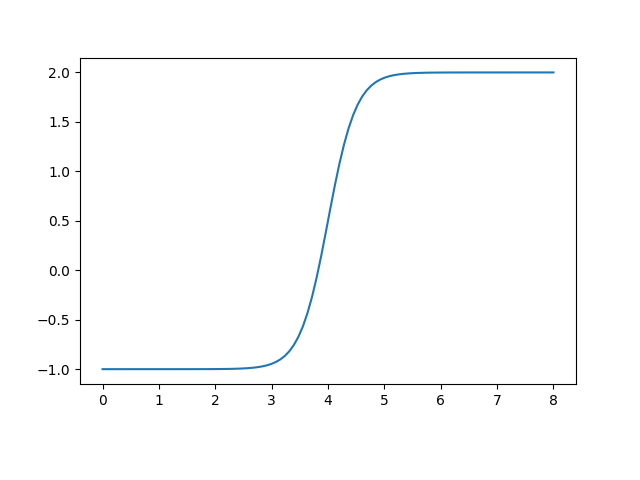
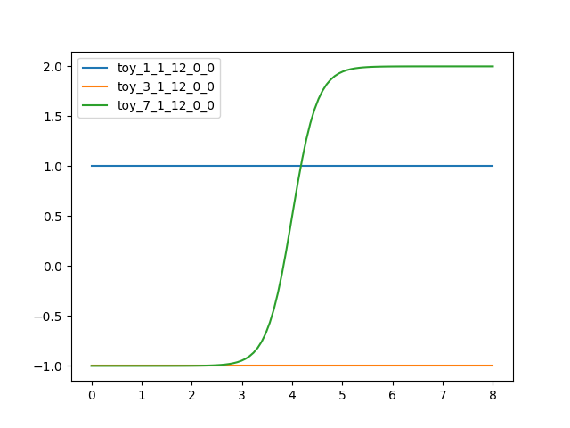

anntools¶
This module implements rudimentary artificial neural network tools required for some models implemented in the HydPy framework.
The relevant models apply some of the neural network features during
simulation runs, which is why we implement these features in the Cython
extension module annutils.
Module anntools implements the following members:
BaseANNBase for implementing artificial neural networks classes.
ANNMulti-layer feed-forward artificial neural network.
ann()Return a new stand-aloneANNobject with the given parameter values.
SeasonalANNHandles relationships described by artificial neural networks that vary within an annual cycle.
-
class
hydpy.auxs.anntools.BaseANN[source]¶ Bases:
objectBase for implementing artificial neural networks classes.
-
class
hydpy.auxs.anntools.ANN(subvars: hydpy.core.parametertools.SubParameters)[source]¶ Bases:
hydpy.auxs.anntools.BaseANNMulti-layer feed-forward artificial neural network.
By default, class
ANNuses the logistic function \(f(x) = \frac{1}{1+exp(-x)}\) to calculate the activation of the neurons of the hidden layer. Alternatively, one can select the identity function \(f(x) = x\) or a variant of the logistic function for filtering specific inputs. See propertyactivationfor more information on how to do this.Usually, one applies class
ANNfor the derivation of very complex control parameters. Its original purpose was to allow for defining arbitrary continuous relationships between the water stored in a dam and the associated water stage (see modeldam_v001). However, for testing purposes classANNcan also be applied directly, as shown in the following examples.Firstly, define the most simple artificial neural network consisting of only one input node, one hidden neuron, and one output node, and pass some arbitrary network parameters:
>>> from hydpy import ANN, nan >>> ann = ANN(None) >>> ann(nmb_inputs=1, nmb_neurons=(1,), nmb_outputs=1, ... weights_input=4.0, weights_output=3.0, ... intercepts_hidden=-16.0, intercepts_output=-1.0)
The following loop subsequently sets the values 0 to 8 as input values, performs the calculation, and prints out the final output. As to be expected, the results show the shape of the logistic function:
>>> from hydpy import round_ >>> for input_ in range(9): ... ann.inputs[0] = input_ ... ann.calculate_values() ... round_([input_, ann.outputs[0]]) 0, -1.0 1, -0.999982 2, -0.998994 3, -0.946041 4, 0.5 5, 1.946041 6, 1.998994 7, 1.999982 8, 2.0
One can also directly plot the resulting graph:
>>> ann.plot(0.0, 8.0)
You can use the pyplot API of matplotlib to modify the figure or to save it to disk (or print it to the screen, in case the interactive mode of matplotlib is disabled):
>>> from hydpy.core.testtools import save_autofig >>> save_autofig("ANN_plot.png")
Some models might require the derivative of certain outputs with respect to individual inputs. One example is application model the
dam_v006, which uses classANNto model the relationship between water storage and stage of a lake. During a simulation run , it additionally needs to know the area of the water surface, which is the derivative of storage with respect to stage. For such purposes, classANNprovides methodcalculate_derivatives(). In the following example, we apply this method and compare its results with finite difference approximations:>>> d_input = 1e-8 >>> for input_ in range(9): ... ann.inputs[0] = input_-d_input/2.0 ... ann.calculate_values() ... value0 = ann.outputs[0] ... ann.inputs[0] = input_+d_input/2.0 ... ann.calculate_values() ... value1 = ann.outputs[0] ... derivative = (value1-value0)/d_input ... ann.inputs[0] = input_ ... ann.calculate_values() ... ann.calculate_derivatives(0) ... round_([input_, derivative, ann.output_derivatives[0]]) 0, 0.000001, 0.000001 1, 0.000074, 0.000074 2, 0.004023, 0.004023 3, 0.211952, 0.211952 4, 3.0, 3.0 5, 0.211952, 0.211952 6, 0.004023, 0.004023 7, 0.000074, 0.000074 8, 0.000001, 0.000001
Note the following two potential pitfalls (both due to improving the computational efficiency of method
calculate_derivatives()): First, for networks with more than one hidden layer, you must callcalculate_values()before callingcalculate_derivatives(). Second, methodcalculate_derivatives()calculates the derivatives with respect to a single input only, to be selected by the idx_input argument. However, it works fine to call methodcalculate_values()ones and to callcalculate_derivatives()multiple times afterwards. Then you can subsequently pass different index values to calculate the derivatives with respect to multiple inputs.The following example shows that everything works well for more complex single layer networks also (we checked the results manually using a spreadsheet program):
>>> ann.nmb_inputs = 3 >>> ann.nmb_neurons = (4,) >>> ann.nmb_outputs = 2 >>> ann.weights_input = [[ 0.2, -0.1, -1.7, 0.6], ... [ 0.9, 0.2, 0.8, 0.0], ... [-0.5, -1.0, 2.3, -0.4]] >>> ann.weights_output = [[ 0.0, 2.0], ... [-0.5, 1.0], ... [ 0.4, 2.4], ... [ 0.8, -0.9]] >>> ann.intercepts_hidden = [ 0.9, 0.0, -0.4, -0.2] >>> ann.intercepts_output = [ 1.3, -2.0] >>> ann.inputs = [-0.1, 1.3, 1.6] >>> ann.calculate_values() >>> round_(ann.outputs) 1.822222, 1.876983
We again validate the calculated derivatives by comparison with numerical approximations:
>>> for idx_input in range(3): ... ann.calculate_derivatives(idx_input) ... round_(ann.output_derivatives) 0.099449, -0.103039 -0.01303, 0.365739 0.027041, -0.203965
>>> d_input = 1e-8 >>> for idx_input in range(3): ... input_ = ann.inputs[idx_input] ... ann.inputs[idx_input] = input_-d_input/2.0 ... ann.calculate_values() ... values0 = ann.outputs.copy() ... ann.inputs[idx_input] = input_+d_input/2.0 ... ann.calculate_values() ... values1 = ann.outputs.copy() ... ann.inputs[idx_input] = input_ ... round_((values1-values0)/d_input) 0.099449, -0.103039 -0.01303, 0.365739 0.027041, -0.203965
The next example shows how to solve the XOR problem with a two-layer network. As usual, 1 stands for True and 0 stands for False.
We define a network with two inputs (I1 and I2), two neurons in the first hidden layer (H11 and H12), one neuron in the second hidden layer (H2), and a single output (O1):
>>> ann.nmb_inputs = 2 >>> ann.nmb_neurons = (2, 1) >>> ann.nmb_outputs = 1
The value of O1 shall be identical with the activation of H2:
>>> ann.weights_output = 1.0 >>> ann.intercepts_output = 0.0
We set all intercepts of the neurons of the hidden layer to 750 (and initialise unnecessary matrix entries with “nan” to avoid confusion). Therefore, an input of 500 or 1000 results in an activation state of approximately zero or one, respectively. :
>>> ann.intercepts_hidden = [[-750.0, -750.0], ... [-750.0, nan]]
The weighting factor between both inputs and H11 is 1000. Hence, one True input is sufficient to activate H1. In contrast, the weighting factor between both inputs and H12 is 500. Hence, two True inputs are required to activate H12:
>>> ann.weights_input= [[1000.0, 500.0], ... [1000.0, 500.0]]
The weighting factor between H11 and H2 is 1000. Hence, in principle, H11 can activate H2. However, the weighting factor between H12 and H2 is -1000. Hence, H12 prevents H2 from becoming activated even when H11 is activated:
>>> ann.weights_hidden= [[[1000.0], ... [-1000.0]]]
To recapitulate, H11 determines if at least one input is True, H12 determines if both inputs are True, and H2 determines if precisely one input is True, which is the solution for the XOR-problem:
>>> ann ann( nmb_inputs=2, nmb_neurons=(2, 1), weights_input=[[1000.0, 500.0], [1000.0, 500.0]], weights_hidden=[[[1000.0], [-1000.0]]], weights_output=[[1.0]], intercepts_hidden=[[-750.0, -750.0], [-750.0, nan]], intercepts_output=[0.0], )
The following calculation confirms the proper configuration of our network:
>>> for inputs in ((0.0, 0.0), ... (1.0, 0.0), ... (0.0, 1.0), ... (1.0, 1.0)): ... ann.inputs = inputs ... ann.calculate_values() ... round_([inputs[0], inputs[1], ann.outputs[0]]) 0.0, 0.0, 0.0 1.0, 0.0, 1.0 0.0, 1.0, 1.0 1.0, 1.0, 0.0
To elaborate on the last calculation, we show the corresponding activations of the hidden neurons. As both inputs are True, both H12 (upper left value) and H22 (upper right value) are activated, but H2 (lower left value) is not:
>>> ann.neurons array([[ 1., 1.], [ 0., 0.]])
Due to sharp response function, the derivatives with respect to both inputs are approximately zero:
>>> for inputs in ((0.0, 0.0), ... (1.0, 0.0), ... (0.0, 1.0), ... (1.0, 1.0)): ... ann.inputs = inputs ... ann.calculate_values() ... ann.calculate_derivatives(0) ... round_([inputs[0], inputs[1], ann.output_derivatives[0]]) 0.0, 0.0, 0.0 1.0, 0.0, 0.0 0.0, 1.0, 0.0 1.0, 1.0, 0.0
To better validate the calculation of derivatives for multi-layer networks, we decrease the weights (and, accordingly, the intercepts) of our network, making its response more smooth:
>>> ann(nmb_inputs=2, ... nmb_neurons=(2, 1), ... nmb_outputs=1, ... weights_input=[[10.0, 5.0], ... [10.0, 5.0]], ... weights_hidden=[[[10.0], ... [-10.0]]], ... weights_output=[[1.0]], ... intercepts_hidden=[[-7.5, -7.5], ... [-7.5, nan]], ... intercepts_output=[0.0])
The results of method
calculate_derivatives()again agree with those of the finite difference approximation:>>> for inputs in ((0.0, 0.0), ... (1.0, 0.0), ... (0.0, 1.0), ... (1.0, 1.0)): ... ann.inputs = inputs ... ann.calculate_values() ... ann.calculate_derivatives(0) ... derivative1 = ann.output_derivatives[0] ... ann.calculate_derivatives(1) ... derivative2 = ann.output_derivatives[0] ... round_([inputs[0], inputs[1], derivative1, derivative2]) 0.0, 0.0, 0.000015, 0.000015 1.0, 0.0, 0.694609, 0.694609 0.0, 1.0, 0.694609, 0.694609 1.0, 1.0, -0.004129, -0.004129
>>> d_input = 1e-8 >>> for inputs in ((0.0, 0.0), ... (1.0, 0.0), ... (0.0, 1.0), ... (1.0, 1.0)): ... derivatives = [] ... for idx_input in range(2): ... ann.inputs = inputs ... ann.inputs[idx_input] = inputs[idx_input]-d_input/2.0 ... ann.calculate_values() ... value0 = ann.outputs[0] ... ann.inputs[idx_input] = inputs[idx_input]+d_input/2.0 ... ann.calculate_values() ... value1 = ann.outputs[0] ... derivatives.append((value1-value0)/d_input) ... round_([inputs[0], inputs[1]] + derivatives) 0.0, 0.0, 0.000015, 0.000015 1.0, 0.0, 0.694609, 0.694609 0.0, 1.0, 0.694609, 0.694609 1.0, 1.0, -0.004129, -0.004129
Note that Python class
ANNhandles a corresponding Cython extension class defined inannutils, which does not protect itself against segmentation faults. But classANNtakes up this task, meaning using its public members should always result in readable exceptions instead of program crashes, e.g.:>>> ANN(None).nmb_layers Traceback (most recent call last): ... hydpy.core.exceptiontools.AttributeNotReady: Attribute `nmb_layers` of object `ann` is not usable so far. At least, you have to prepare attribute `nmb_inputs` first.
-
NDIM= 0¶
-
TYPE= 'annutils.ANN'¶
-
TIME= None¶
-
SPAN= (None, None)¶
-
nmb_inputs¶ The number of input nodes.
>>> from hydpy import ANN >>> ann = ANN(None) >>> ann(nmb_inputs=2, nmb_neurons=(2, 1), nmb_outputs=3) >>> ann.nmb_inputs 2 >>> ann.nmb_inputs = 3 >>> ann.nmb_inputs 3
-
nmb_outputs¶ The number of output nodes.
>>> from hydpy import ANN >>> ann = ANN(None) >>> ann(nmb_inputs=2, nmb_neurons=(2, 1), nmb_outputs=3) >>> ann.nmb_outputs 3 >>> ann.nmb_outputs = 2 >>> ann.nmb_outputs 2 >>> del ann.nmb_outputs >>> ann.nmb_outputs Traceback (most recent call last): ... hydpy.core.exceptiontools.AttributeNotReady: Attribute `nmb_outputs` of object `ann` has not been prepared so far.
-
nmb_neurons¶ The number of neurons of the hidden layers.
>>> from hydpy import ANN >>> ann = ANN(None) >>> ann(nmb_inputs=2, nmb_neurons=(2, 1), nmb_outputs=3) >>> ann.nmb_neurons (2, 1) >>> ann.nmb_neurons = (3,) >>> ann.nmb_neurons (3,) >>> del ann.nmb_neurons >>> ann.nmb_neurons Traceback (most recent call last): ... hydpy.core.exceptiontools.AttributeNotReady: Attribute `nmb_neurons` of object `ann` has not been prepared so far.
-
property
nmb_weights_input¶ The number of input weights.
>>> from hydpy import ANN >>> ann = ANN(None) >>> ann(nmb_inputs=3, nmb_neurons=(2, 1), nmb_outputs=1) >>> ann.nmb_weights_input 6
-
property
shape_weights_input¶ The shape of the array containing the input weights.
The first integer value is the number of input nodes; the second integer value is the number of neurons of the first hidden layer:
>>> from hydpy import ANN >>> ann = ANN(None) >>> ann(nmb_inputs=3, nmb_neurons=(2, 1), nmb_outputs=1) >>> ann.shape_weights_input (3, 2)
-
weights_input¶ The weights between all input nodes and neurons of the first hidden layer.
The “weight properties” of class
ANNare usable as explained in-depth for the input weights below.The input nodes and the neurons vary on the first axis and the second axis of the 2-dimensional array, respectively (see property
shape_weights_input):>>> from hydpy import ANN >>> ann = ANN(None) >>> ann(nmb_inputs=2, nmb_neurons=(3,)) >>> ann.weights_input array([[ 0., 0., 0.], [ 0., 0., 0.]])
The following error occurs when either the number of input nodes or of hidden neurons is unknown:
>>> del ann.nmb_inputs >>> ann.weights_input Traceback (most recent call last): ... hydpy.core.exceptiontools.AttributeNotReady: Attribute `weights_input` of object `ann` is not usable so far. At least, you have to prepare attribute `nmb_inputs` first. >>> ann.nmb_inputs = 2
It is allowed to set values via slicing:
>>> ann.weights_input[:, 0] = 1. >>> ann.weights_input array([[ 1., 0., 0.], [ 1., 0., 0.]])
If possible, property
weights_inputperforms type conversions:>>> ann.weights_input = "2" >>> ann.weights_input array([[ 2., 2., 2.], [ 2., 2., 2.]])
One can assign whole matrices directly:
>>> import numpy >>> ann.weights_input = numpy.eye(2, 3) >>> ann.weights_input array([[ 1., 0., 0.], [ 0., 1., 0.]])
One can also delete the values contained in the array:
>>> del ann.weights_input >>> ann.weights_input array([[ 0., 0., 0.], [ 0., 0., 0.]])
Errors like wrong shapes (or unconvertible inputs) result in error messages:
>>> ann.weights_input = numpy.eye(3) Traceback (most recent call last): ... ValueError: While trying to set the input weights of the artificial neural network `ann` of element `?`, the following error occurred: could not broadcast input array from shape (3,3) into shape (2,3)
-
property
shape_weights_output¶ The shape of the array containing the output weights.
The first integer value is the number of neurons of the first hidden layer; the second integer value is the number of output nodes:
>>> from hydpy import ANN >>> ann = ANN(None) >>> ann(nmb_inputs=2, nmb_neurons=(2, 1), nmb_outputs=3) >>> ann.shape_weights_output (1, 3)
-
property
nmb_weights_output¶ The number of output weights.
>>> from hydpy import ANN >>> ann = ANN(None) >>> ann(nmb_inputs=2, nmb_neurons=(2, 4), nmb_outputs=3) >>> ann.nmb_weights_output 12
-
weights_output¶ The weights between all neurons of the last hidden layer and the output nodes.
See the documentation on properties
shape_weights_outputandweights_inputfor further information.
The shape of the array containing the activation of the hidden neurons.
The first integer value is the number of connection between the hidden layers. The second integer value is the maximum number of neurons of all hidden layers feeding information into another hidden layer (all except the last one). The third integer value is the maximum number of the neurons of all hidden layers receiving information from another hidden layer (all except the first one):
>>> from hydpy import ANN >>> ann = ANN(None) >>> ann(nmb_inputs=6, nmb_neurons=(4, 3, 2), nmb_outputs=6) >>> ann.shape_weights_hidden (2, 4, 3) >>> ann(nmb_inputs=6, nmb_neurons=(4,), nmb_outputs=6) >>> ann.shape_weights_hidden (0, 0, 0)
The number of hidden weights.
>>> from hydpy import ANN >>> ann = ANN(None) >>> ann(nmb_inputs=2, nmb_neurons=(4, 3, 2), nmb_outputs=3) >>> ann.nmb_weights_hidden 18
The weights between the neurons of the different hidden layers.
See the documentation on properties
shape_weights_hiddenandweights_inputfor further information.
The shape of the array containing the intercepts of neurons of the hidden layers.
The first integer value is to the number of hidden layers; the second integer value is the maximum number of neurons of all hidden layers:
>>> from hydpy import ANN >>> ann = ANN(None) >>> ann(nmb_inputs=6, nmb_neurons=(4, 3, 2), nmb_outputs=6) >>> ann.shape_intercepts_hidden (3, 4)
The number of input intercepts.
The intercepts of all neurons of the hidden layers.
See the documentation on properties
shape_intercepts_hiddenandweights_inputfor further information.
-
property
shape_intercepts_output¶ The shape of the array containing the intercepts of neurons of the hidden layers.
The only integer value is the number of output nodes:
>>> from hydpy import ANN >>> ann = ANN(None) >>> ann(nmb_inputs=2, nmb_neurons=(2, 1), nmb_outputs=3) >>> ann.shape_intercepts_output (3,)
-
property
nmb_intercepts_output¶ The number of output intercepts.
>>> from hydpy import ANN >>> ann = ANN(None) >>> ann(nmb_inputs=2, nmb_neurons=(2, 1), nmb_outputs=3) >>> ann.nmb_intercepts_output 3
-
intercepts_output¶ The intercepts of all output nodes.
See the documentation on properties
shape_intercepts_outputandweights_inputfor further information.
-
property
shape_activation¶ The shape of the array defining the activation function for each neuron of the hidden layers.
The first integer value is to the number of hidden layers; the second integer value is the maximum number of neurons of all hidden layers:
>>> from hydpy import ANN >>> ann = ANN(None) >>> ann(nmb_inputs=6, nmb_neurons=(4, 3, 2), nmb_outputs=6) >>> ann.shape_activation (3, 4)
-
activation¶ Indices for selecting suitable activation functions for the neurons of the hidden layers.
By default,
ANNuses the logistic function for calculating the activation of the neurons of the hidden layers and uses the identity function for the output nodes. However, propertyactivationallows defining other activation functions for the hidden neurons individually. So far, one can select the identity function and a “filter version” of the logistic function as alternatives – others might follow.Assume a neuron receives input \(i_1\) and \(i_2\) from two nodes of the input layer or its upstream hidden layer. We weight these input values as usual:
\(x_1 = c + w_1 \cdot i_1 + w_2 \cdot i_2\)
When selecting the identity function through setting the index value “0”, the activation of the considered neuron is:
\(a_1 = x_1\)
Using the identity function is helpful for educational examples and for bypassing input through one layer without introducing nonlinearity.
When selecting the logistic function through setting the index value “1”, the activation of the considered neuron is:
\(a_1 = 1-\frac{1}{1+exp(x_1)}\)
The logistic function is a standard function for constructing neural networks. It allows to approximate any relationship within a specific range and accuracy, provided the neural network is large enough.
When selecting the “filter version” of the logistic function through setting the index value “2”, the activation of the considered neuron is:
\(a_1 = 1-\frac{1}{1+exp(x_1)} \cdot i_1\)
“Filter version” means that our neuron now filters the input of the single input node placed at the corresponding position of its layer. This activation function helps force the output of a neural network to be zero but never negative beyond a certain threshold.
Similar to the main documentation on class
ANN, we define a relatively complex network to show that both the “normal” and the derivative calculations work. This time, we set the activation function explicitly. “1” stands for the logistic function, which we first use for all hidden neurons:>>> from hydpy.auxs.anntools import ANN >>> from hydpy import round_ >>> ann = ANN(None) >>> ann(nmb_inputs=2, ... nmb_neurons=(2, 2), ... nmb_outputs=2, ... weights_input=[[0.2, -0.1], ... [-1.7, 0.6]], ... weights_hidden=[[[-.5, 1.0], ... [0.4, 2.4]]], ... weights_output=[[0.8, -0.9], ... [0.5, -0.4]], ... intercepts_hidden=[[0.9, 0.0], ... [-0.4, -0.2]], ... intercepts_output=[1.3, -2.0], ... activation=[[1, 1], ... [1, 1]]) >>> ann.inputs = -0.1, 1.3 >>> ann.calculate_values() >>> round_(ann.outputs) 2.074427, -2.734692 >>> for idx_input in range(2): ... ann.calculate_derivatives(idx_input) ... round_(ann.output_derivatives) -0.006199, 0.006571 0.039804, -0.044169
In the next example, we want to apply the identity function for the second neuron of the first hidden layer and the first neuron of the second hidden layer. Therefore, we pass its index value “0” to the corresponding
activationentries:>>> ann.activation = [[1, 0], [0, 1]] >>> ann ann( nmb_inputs=2, nmb_neurons=(2, 2), nmb_outputs=2, weights_input=[[0.2, -0.1], [-1.7, 0.6]], weights_hidden=[[[-0.5, 1.0], [0.4, 2.4]]], weights_output=[[0.8, -0.9], [0.5, -0.4]], intercepts_hidden=[[0.9, 0.0], [-0.4, -0.2]], intercepts_output=[1.3, -2.0], activation=[[1, 0], [0, 1]], )
The agreement between the analytical and the numerical derivatives gives us confidence everything works fine:
>>> ann.calculate_values() >>> round_(ann.outputs) 1.584373, -2.178468 >>> for idx_input in range(2): ... ann.calculate_derivatives(idx_input) ... round_(ann.output_derivatives) -0.056898, 0.060219 0.369807, -0.394801 >>> d_input = 1e-8 >>> for idx_input in range(2): ... input_ = ann.inputs[idx_input] ... ann.inputs[idx_input] = input_-d_input/2.0 ... ann.calculate_values() ... values0 = ann.outputs.copy() ... ann.inputs[idx_input] = input_+d_input/2.0 ... ann.calculate_values() ... values1 = ann.outputs.copy() ... ann.inputs[idx_input] = input_ ... round_((values1-values0)/d_input) -0.056898, 0.060219 0.369807, -0.394801
Finally, we perform the same check for the “filter version” of the logistic function:
>>> ann.activation = [[1, 2], [2, 1]] >>> ann.calculate_values() >>> round_(ann.outputs) 1.825606, -2.445682 >>> for idx_input in range(2): ... ann.calculate_derivatives(idx_input) ... round_(ann.output_derivatives) 0.009532, -0.011236 -0.001715, 0.02872 >>> d_input = 1e-8 >>> for idx_input in range(2): ... input_ = ann.inputs[idx_input] ... ann.inputs[idx_input] = input_-d_input/2.0 ... ann.calculate_values() ... values0 = ann.outputs.copy() ... ann.inputs[idx_input] = input_+d_input/2.0 ... ann.calculate_values() ... values1 = ann.outputs.copy() ... ann.inputs[idx_input] = input_ ... round_((values1-values0)/d_input) 0.009532, -0.011236 -0.001715, 0.02872
-
property
shape_inputs¶ The shape of the array containing the input values.
The only integer value is the number of input nodes:
>>> from hydpy import ANN >>> ann = ANN(None) >>> ann(nmb_inputs=5, nmb_neurons=(2, 1), nmb_outputs=2) >>> ann.shape_inputs (5,)
-
inputs¶ The values of the input nodes.
See the documentation on properties
shape_inputsandweights_inputfor further information.
-
property
shape_outputs¶ The shape of the array containing the output values.
The only integer value is the number of output nodes:
>>> from hydpy import ANN >>> ann = ANN(None) >>> ann(nmb_inputs=2, nmb_neurons=(2, 1), nmb_outputs=6) >>> ann.shape_outputs (6,)
-
outputs¶ The values of the output nodes.
See the documentation on properties
shape_outputsandweights_inputfor further information.
-
property
shape_output_derivatives¶ The shape of the array containing the output derivatives.
The only integer value is the number of output nodes:
>>> from hydpy import ANN >>> ann = ANN(None) >>> ann(nmb_inputs=2, nmb_neurons=(2, 1), nmb_outputs=6) >>> ann.shape_output_derivatives (6,)
-
output_derivatives¶ The derivatives of the output nodes.
See the documentation on properties
shape_output_derivativesandweights_inputfor further information.
-
nmb_layers¶ The number of hidden layers.
>>> from hydpy import ANN >>> ann = ANN(None) >>> ann(nmb_inputs=2, nmb_neurons=(2, 1), nmb_outputs=3) >>> ann.nmb_layers 2
-
shape_neurons¶ The shape of the array containing the activities of the neurons of the hidden layers.
The first integer value is the number of hidden layers; the second integer value is the maximum number of neurons of all hidden layers:
>>> from hydpy import ANN >>> ann = ANN(None) >>> ann(nmb_inputs=2, nmb_neurons=(4, 3, 2), nmb_outputs=6) >>> ann.shape_neurons (3, 4)
-
neurons¶ The derivatives of the activation of the neurons of the hidden layers.
See the documentation on properties
shape_neuronsandweights_inputfor further information.
-
shape_neuron_derivatives¶ The shape of the array containing the derivatives of the activities of the neurons of the hidden layers.
The first integer value is the number of hidden layers; the second integer value is the maximum number of neurons of all hidden layers:
>>> from hydpy import ANN >>> ann = ANN(None) >>> ann(nmb_inputs=2, nmb_neurons=(4, 3, 2), nmb_outputs=6) >>> ann.shape_neuron_derivatives (3, 4)
-
neuron_derivatives¶ The derivatives of the activation of the neurons of the hidden layers.
See the documentation on properties
shape_neuron_derivativesandweights_inputfor further information.
-
calculate_values() → None[source]¶ Calculate the network output values based on the input values defined previously.
For more information, see the documentation on class
ANN.
-
calculate_derivatives(idx_input: int) → None[source]¶ Calculate the derivatives of the network output values with respect to the input value of the given index.
For more information, see the documentation on class
ANN.
-
property
nmb_weights¶ The number of all input, inner, and output weights.
>>> from hydpy import ANN >>> ann = ANN(None) >>> ann(nmb_inputs=1, nmb_neurons=(2, 3), nmb_outputs=4) >>> ann.nmb_weights 20
-
property
nmb_intercepts¶ The number of all inner and output intercepts.
>>> from hydpy import ANN >>> ann = ANN(None) >>> ann(nmb_inputs=1, nmb_neurons=(2, 3), nmb_outputs=4) >>> ann.nmb_intercepts 9
-
property
nmb_parameters¶ The sum of
nmb_weightsandnmb_intercepts.>>> from hydpy import ANN >>> ann = ANN(None) >>> ann(nmb_inputs=1, nmb_neurons=(2, 3), nmb_outputs=4) >>> ann.nmb_parameters 29
-
verify() → None[source]¶ Raise a
RuntimeErrorif the network’s shape is not defined completely.>>> from hydpy import ANN >>> ANN(None).verify() Traceback (most recent call last): ... RuntimeError: The shape of the the artificial neural network parameter `ann` of element `?` has not been defined so far.
-
assignrepr(prefix, indent=0) → str[source]¶ Return a string representation of the actual
ANNobject prefixed with the given string.
-
plot(xmin: float, xmax: float, idx_input: int = 0, idx_output: int = 0, points: int = 100, **kwargs) → None[source]¶ Plot the relationship between a particular input (idx_input) and a particular output (idx_output) variable described by the actual
ANNobject.Define the lower and the upper bound of the x-axis via arguments xmin and xmax. Modify the number of plotted points via argument points. Pass additional matplotlib plotting arguments as keyword arguments.
-
name= 'ann'¶
-
-
hydpy.auxs.anntools.ann(**kwargs) → hydpy.auxs.anntools.ANN[source]¶ Return a new stand-alone
ANNobject with the given parameter values.The purpose of this function is to allow for string representations of parameters containing multiple
ANNinstances.When passing no arguments, the default values of class
ANNapply:>>> from hydpy import ann >>> ann1 = ann() >>> ann1 ann( weights_input=[[0.0]], weights_output=[[0.0]], intercepts_hidden=[[0.0]], intercepts_output=[0.0], )
Of course, you can change any parameter value:
>>> ann2 = ann(nmb_inputs=1, nmb_neurons=(1,), nmb_outputs=1, ... weights_input=4.0, weights_output=3.0, ... intercepts_hidden=-16.0, intercepts_output=-1.0) >>> ann2 ann( weights_input=[[4.0]], weights_output=[[3.0]], intercepts_hidden=[[-16.0]], intercepts_output=[-1.0], )
The following line clarifies that we initialised two independent
ANNobjects (instead of changing the values of an existingANNobject vai its call method):>>> ann1 is ann2 False
-
class
hydpy.auxs.anntools.SeasonalANN(subvars: hydpy.core.parametertools.SubParameters)[source]¶ Bases:
hydpy.auxs.anntools.BaseANNHandles relationships described by artificial neural networks that vary within an annual cycle.
Class
SeasonalANNis an alternative implementation of classSeasonalParameterspecifically designed for handling multipleANNobjects that are valid for different times of the year, described byTOYobjects. The total output of aSeasonalANNobject is a weighted mean of the output of one or two “normal” neural networks. Propertyratiosprovides the weights for the different times of the year.To explain this in more detail, we modify an example of the documentation on class. let us define a
SeasonalANNobject that contains three “normal” networks for January, 1, March, 1, and July, 1, respectively:>>> from hydpy import ann, pub, SeasonalANN >>> pub.options.reprdigits = 6 >>> pub.timegrids = "2000-01-01", "2000-10-01", "1d" >>> seasonalann = SeasonalANN(None) >>> seasonalann( ... _1_1_12=ann(nmb_inputs=1, nmb_neurons=(1,), nmb_outputs=1, ... weights_input=0.0, weights_output=0.0, ... intercepts_hidden=0.0, intercepts_output=1.0), ... _7_1_12=ann(nmb_inputs=1, nmb_neurons=(1,), nmb_outputs=1, ... weights_input=4.0, weights_output=3.0, ... intercepts_hidden=-16.0, intercepts_output=-1.0), ... _3_1_12=ann(nmb_inputs=1, nmb_neurons=(1,), nmb_outputs=1, ... weights_input=0.0, weights_output=0.0, ... intercepts_hidden=0.0, intercepts_output=-1.0))
The confusing time order in the initialization call above does not pose a problem, as class
SeasonalANNperforms time sorting internally:>>> seasonalann seasonalann( toy_1_1_12_0_0=ann( weights_input=[[0.0]], weights_output=[[0.0]], intercepts_hidden=[[0.0]], intercepts_output=[1.0], ), toy_3_1_12_0_0=ann( weights_input=[[0.0]], weights_output=[[0.0]], intercepts_hidden=[[0.0]], intercepts_output=[-1.0], ), toy_7_1_12_0_0=ann( weights_input=[[4.0]], weights_output=[[3.0]], intercepts_hidden=[[-16.0]], intercepts_output=[-1.0], ), )
One can easily plot the resulting graphs of all networks:
>>> seasonalann.plot(0.0, 8.0)
You can use the pyplot API of matplotlib to modify the figure or to save it to disk (or print it to the screen, in case the interactive mode of matplotlib is disabled):
>>> from hydpy.core.testtools import save_autofig >>> save_autofig("SeasonalANN_plot.png")
The property
shapedoes reflect the number of required weighting ratios for each time of year (in this example 366 days per year) and each neural network (in this example three):>>> seasonalann.shape (366, 3)
For safety reasons,
shapeshould normally not be changed manually:>>> seasonalann.shape = (366, 4) Traceback (most recent call last): ... AttributeError: can't set attribute
The following interactive plot shows the
ratiosused for weighting(note the missing values for October, November, and December, being not relevant for the initialisation period):For example, on July, 1 (which is the 183rd day of a leap year), only the output of the third network is relevant:
>>> from hydpy import print_values >>> print_values(seasonalann.ratios[182]) 0.0, 0.0, 1.0
On Juni, 30, and July, 2, also the second and the first neural network are relevant, respectively:
>>> print_values(seasonalann.ratios[181]) 0.0, 0.008197, 0.991803 >>> print_values(seasonalann.ratios[183]) 0.005435, 0.0, 0.994565
Inserting data, processing this data, and fetching the output works as explained for class
ANN, except that you must additionally pass the index of the actual time of year. Passing the index value 182 activates the third network only, being configured as the one exemplifying classANN:>>> from hydpy import round_ >>> for input_ in range(9): ... seasonalann.inputs[0] = input_ ... seasonalann.calculate_values(182) ... round_([input_, seasonalann.outputs[0]]) 0, -1.0 1, -0.999982 2, -0.998994 3, -0.946041 4, 0.5 5, 1.946041 6, 1.998994 7, 1.999982 8, 2.0
To see that the final output values are actually the weighted mean of the output values of the single neural networks, we repeat the above example for January, 13, where the first and the second neural network have ratios of 0.8 and 0.2 respectively:
>>> print_values(seasonalann.ratios[12]) 0.8, 0.2, 0.0
For both networks, all parameters except the output intercepts are zero. Hence, the calculated output is independent of the given input. The output of the first network (1.0) dominates the output of the second network (-1.0):
>>> from hydpy import round_ >>> for input_ in range(9): ... seasonalann.inputs[0] = input_ ... seasonalann.calculate_values(12) ... round_([input_, seasonalann.outputs[0]]) 0, 0.6 1, 0.6 2, 0.6 3, 0.6 4, 0.6 5, 0.6 6, 0.6 7, 0.6 8, 0.6
It is of great importance that all contained neural networks are consistent. Hence class
SeasonalANNperforms some related checks:>>> seasonalann = SeasonalANN(None) >>> seasonalann.calculate_values(0) Traceback (most recent call last): ... RuntimeError: The seasonal neural network collection `seasonalann` of element `?` has not been properly prepared so far.
>>> seasonalann(1) Traceback (most recent call last): ... TypeError: Type `int` is not (a subclass of) type `ANN`.
>>> seasonalann( ... _13_1_12=ann(nmb_inputs=2, nmb_neurons=(1,), nmb_outputs=1, ... weights_input=0.0, weights_output=0.0, ... intercepts_hidden=0.0, intercepts_output=1.0)) Traceback (most recent call last): ... ValueError: While trying to add a season specific neural network to parameter `seasonalann` of element `?`, the following error occurred: While trying to initialise a TOY object based on argument value `_13_1_12` of type `str`, the following error occurred: While trying to retrieve the month, the following error occurred: The value of property `month` of TOY (time of year) objects must lie within the range `(1, 12)`, but the given value is `13`.
>>> seasonalann( ... ann(nmb_inputs=2, nmb_neurons=(1,), nmb_outputs=1, ... weights_input=0.0, weights_output=0.0, ... intercepts_hidden=0.0, intercepts_output=1.0)) >>> seasonalann seasonalann( ann( nmb_inputs=2, weights_input=[[0.0], [0.0]], weights_output=[[0.0]], intercepts_hidden=[[0.0]], intercepts_output=[1.0], ) )
>>> seasonalann( ... ann(nmb_inputs=2, nmb_neurons=(1,), nmb_outputs=1, ... weights_input=0.0, weights_output=0.0, ... intercepts_hidden=0.0, intercepts_output=1.0), ... _7_1_12=ann(nmb_inputs=1, nmb_neurons=(1,), nmb_outputs=1, ... weights_input=4.0, weights_output=3.0, ... intercepts_hidden=-16.0, intercepts_output=-1.0), ... _3_1_12=ann(nmb_inputs=1, nmb_neurons=(1,), nmb_outputs=1, ... weights_input=0.0, weights_output=0.0, ... intercepts_hidden=0.0, intercepts_output=-1.0)) Traceback (most recent call last): ... ValueError: Type `SeasonalANN` accepts either a single positional argument or an arbitrary number of keyword arguments, but for the corresponding parameter of element `?` 1 positional and 2 keyword arguments have been given.
>>> seasonalann( ... _1_1_12=ann(nmb_inputs=2, nmb_neurons=(1,), nmb_outputs=1, ... weights_input=0.0, weights_output=0.0, ... intercepts_hidden=0.0, intercepts_output=1.0), ... _7_1_12=ann(nmb_inputs=1, nmb_neurons=(1,), nmb_outputs=1, ... weights_input=4.0, weights_output=3.0, ... intercepts_hidden=-16.0, intercepts_output=-1.0), ... _3_1_12=ann(nmb_inputs=1, nmb_neurons=(1,), nmb_outputs=1, ... weights_input=0.0, weights_output=0.0, ... intercepts_hidden=0.0, intercepts_output=-1.0)) Traceback (most recent call last): ... RuntimeError: The number of input and output values of all neural networks contained by a seasonal neural network collection must be identical and be known by the containing object. But the seasonal neural network collection `seasonalann` of element `?` assumes `2` input and `1` output values, while the network corresponding to the time of year `toy_3_1_12_0_0` requires `1` input and `1` output values.
For safety, each failure results in a total loss of the previously defined networks:
>>> seasonalann seasonalann()
Alternatively, neural networks can be added individually via attribute access:
>>> jan = ann(nmb_inputs=1, nmb_neurons=(1,), nmb_outputs=1, ... weights_input=0.0, weights_output=0.0, ... intercepts_hidden=0.0, intercepts_output=1.0) >>> seasonalann.toy_1_1_12 = jan
If you set an attribute, everything updates automatically, e.g.:
>>> round_(seasonalann.ratios[0]) 1.0
The mentioned safety checks do also apply when adding networks via attribute access, e.g.:
>>> seasonalann.toy_7_1_12 = ann(nmb_inputs=2, ... nmb_neurons=(1,), ... nmb_outputs=1, ... weights_input=0.0, ... weights_output=0.0, ... intercepts_hidden=0.0, ... intercepts_output=1.0) Traceback (most recent call last): ... RuntimeError: While trying to assign a new neural network to the seasonal neural network collection `seasonalann` of element `?` based on name `toy_7_1_12`, the following error occurred: The number of input and output values of all neural networks contained by a seasonal neural network collection must be identical and be known by the containing object. But the seasonal neural network collection `seasonalann` of element `?` assumes `1` input and `1` output values, while the network corresponding to the time of year `toy_7_1_12_0_0` requires `2` input and `1` output values.
Besides setting new networks, getting and deleting them also works:
>>> seasonalann.toy_1_1_12 = jan >>> seasonalann.toy_1_1_12 ann( weights_input=[[0.0]], weights_output=[[0.0]], intercepts_hidden=[[0.0]], intercepts_output=[1.0], ) >>> del seasonalann.toy_1_1_12
These are the error messages related to attribute access problems:
>>> seasonalann.toy_1_1_12 Traceback (most recent call last): ... AttributeError: While trying to look up for a neural network handled by the seasonal neural network collection `seasonalann` of element `?` based on name `toy_1_1_12`, the following error occurred: No neural network is registered under a TOY object named `toy_1_1_12_0_0`.
>>> del seasonalann.toy_1_1_12 Traceback (most recent call last): ... AttributeError: While trying to remove a new neural network from the seasonal neural network collection `seasonalann` of element `?` based on name `toy_1_1_12`, the following error occurred: No neural network is registered under a TOY object named `toy_1_1_12_0_0`.
>>> seasonalann.toy_1_1_12 = 1 Traceback (most recent call last): ... TypeError: While trying to assign a new neural network to the seasonal neural network collection `seasonalann` of element `?` based on name `toy_1_1_12`, the following error occurred: Value `1` of type `int` has been given, but a value of type `ANN` is required.
Setting and deleting “normal” attributes is supported:
>>> seasonalann.temp = 999 >>> seasonalann.temp 999 >>> del seasonalann.temp >>> seasonalann.temp Traceback (most recent call last): ... AttributeError: 'SeasonalANN' object has no attribute 'temp'
-
NDIM= 0¶
-
TYPE= 'annutils.SeasonalANN'¶
-
TIME= None¶
-
SPAN= (None, None)¶
-
refresh() → None[source]¶ Prepare the actual
SeasonalANNobject for calculations.Class
SeasonalANNstores itsANNobjects by reference. Therefore, despite all automated refreshings (explained in the general documentation on classSeasonalANN), it is still possible to destroy the inner consistency of aSeasonalANNinstance:>>> from hydpy import SeasonalANN, ann >>> seasonalann = SeasonalANN(None) >>> seasonalann.simulationstep = "1d" >>> jan = ann(nmb_inputs=1, nmb_neurons=(1,), nmb_outputs=1, ... weights_input=0.0, weights_output=0.0, ... intercepts_hidden=0.0, intercepts_output=1.0) >>> seasonalann(_1_1_12=jan) >>> jan.nmb_inputs, jan.nmb_outputs = 2, 3 >>> jan.nmb_inputs, jan.nmb_outputs (2, 3) >>> seasonalann.nmb_inputs, seasonalann.nmb_outputs (1, 1)
Due to the C level implementation of the mathematical core of both
ANNandSeasonalANNin moduleannutils, such an inconsistency might result in a program crash without any informative error message. Whenever you are think some inconsistency might have crept in and you want to repair it, call methodrefresh()explicitly:>>> seasonalann.refresh() >>> jan.nmb_inputs, jan.nmb_outputs (2, 3) >>> seasonalann.nmb_inputs, seasonalann.nmb_outputs (2, 3)
-
verify() → None[source]¶ Raise a
RuntimeErrorand remove all handled neural networks, if they are defined inconsistently.Class
SeasonalANNstores itsANNobjects by reference. Therefore, despite all automated refreshings (explained in the general documentation on classSeasonalANN), it is still possible to destroy the inner consistency of aSeasonalANNinstance:>>> from hydpy import SeasonalANN, ann >>> seasonalann = SeasonalANN(None) >>> seasonalann.simulationstep = "1d" >>> jan = ann(nmb_inputs=1, nmb_neurons=(1,), nmb_outputs=1, ... weights_input=0.0, weights_output=0.0, ... intercepts_hidden=0.0, intercepts_output=1.0) >>> seasonalann(_1_1_12=jan) >>> jan.nmb_inputs, jan.nmb_outputs = 2, 3 >>> jan.nmb_inputs, jan.nmb_outputs (2, 3) >>> seasonalann.nmb_inputs, seasonalann.nmb_outputs (1, 1)
Due to the C level implementation of the mathematical core of both
ANNandSeasonalANNin moduleannutils, such an inconsistency might result in a program crash without any informative error message. Whenever you think some inconsistency might have crept in and you want to find out if your suspicion is right, call methodverify()explicitly.>>> seasonalann.verify() Traceback (most recent call last): ... RuntimeError: The number of input and output values of all neural networks contained by a seasonal neural network collection must be identical and be known by the containing object. But the seasonal neural network collection `seasonalann` of element `?` assumes `1` input and `1` output values, while the network corresponding to the time of year `toy_1_1_12_0_0` requires `2` input and `3` output values.
>>> seasonalann seasonalann()
>>> seasonalann.verify() Traceback (most recent call last): ... RuntimeError: Seasonal artificial neural network collections need to handle at least one "normal" single neural network, but for the seasonal neural network `seasonalann` of element `?` none has been defined so far.
-
property
ratios¶ The ratios for weighting the single neural network outputs.
-
property
nmb_inputs¶ The number of input values of all neural networks.
-
property
inputs¶ The general input data for all neural networks.
-
property
nmb_outputs¶ The number of output values of all neural networks.
-
name= 'seasonalann'¶
-
property
outputs¶ The weighted output of the individual neural networks.
-